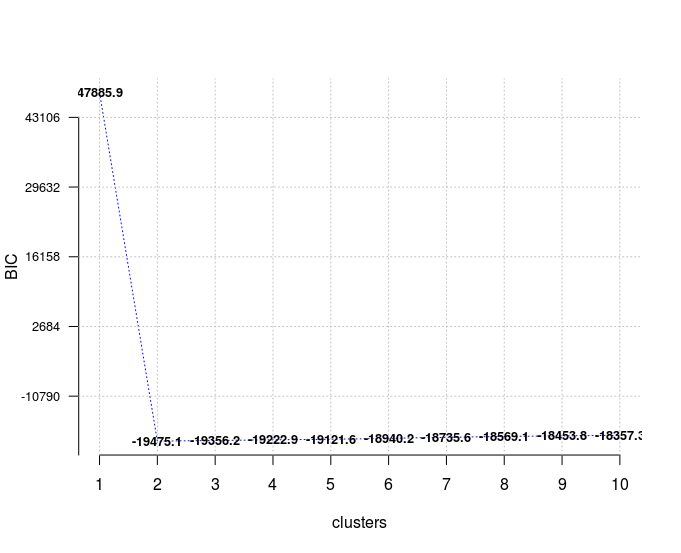
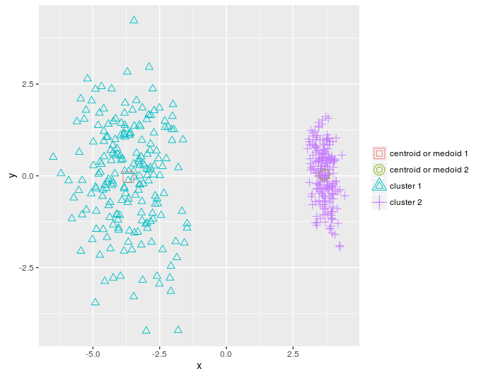
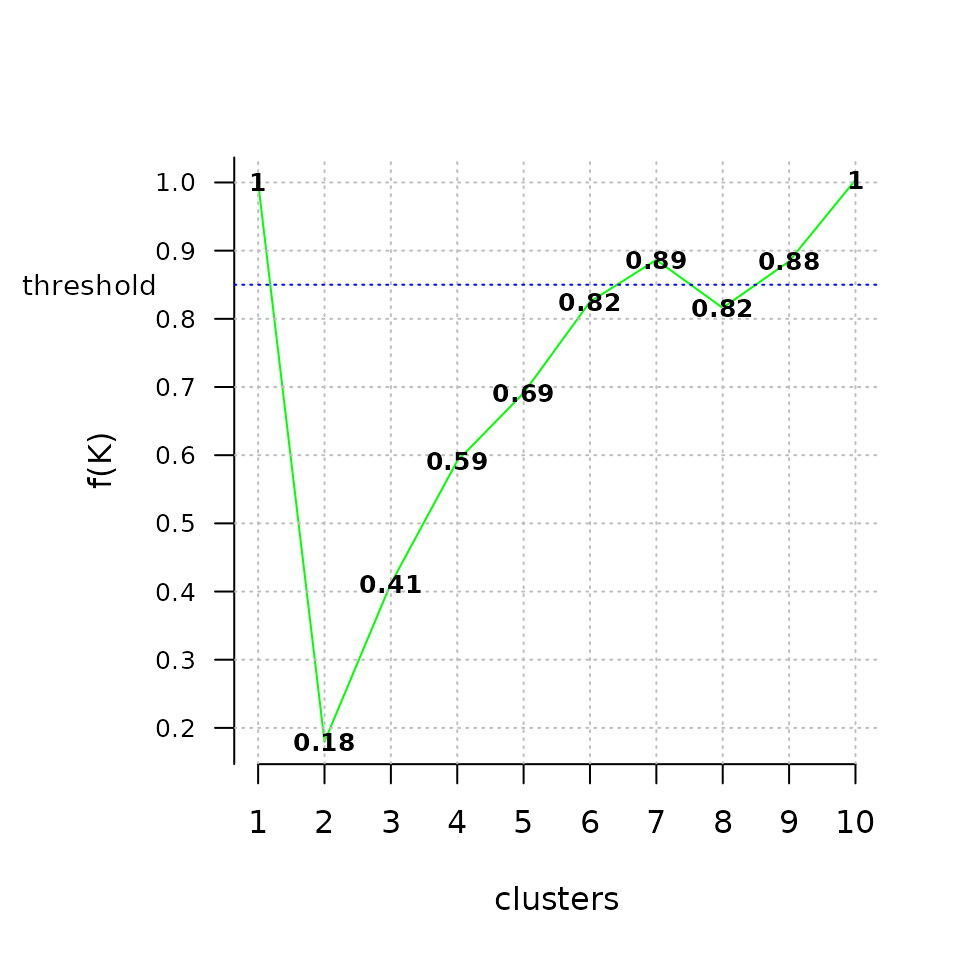
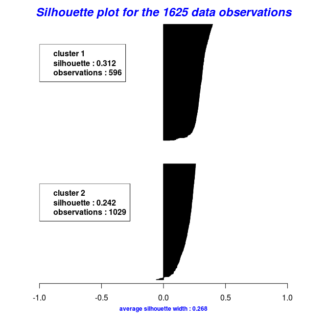

Functionality of the ClusterR package
Lampros Mouselimis
2022-05-15
Source:vignettes/the_clusterR_package.Rmd
the_clusterR_package.RmdCluster analysis or clustering is the task of grouping a set of objects in such a way that objects in the same group (called a cluster) are more similar (in some sense or another) to each other than to those in other groups (clusters). It is the main task of exploratory data mining, and a common technique for statistical data analysis, used in many fields, including machine learning, pattern recognition, image analysis, information retrieval, bioinformatics, data compression, and computer graphics.
The most prominent examples of clustering algorithms are Connectivity-based clustering (hierarchical clustering), Centroid-based clustering (k-means, k-medoids,…), Distribution-based clustering (Gaussian mixture models) and Density-based clustering (DBSCAN, OPTICS,…).
The ClusterR package consists of centroid-based (k-means, mini-batch-kmeans, k-medoids) and distribution-based (GMM) clustering algorithms. Furthermore, the package offers functions to
- validate the output using the true labels,
- plot the results using either a silhouette or a 2-dimensional plot,
- predict new observations,
- estimate the optimal number of clusters for each algorithm separately.
The following notes and examples explain the functionality of the clustering algorithms, which are part of the ClusterR package.
Gaussian Mixture Models (GMM)
Gaussian Mixture Models are a probabilistic model for representing normally distributed subpopulations within an overall population. A Gaussian mixture model is parameterized by two types of values, the mixture component weights and the component means and covariances (for the multivariate case). If the number of components is known, expectation maximization is the technique most commonly used to estimate the mixture model’s parameters.
The GMM function in the ClusterR package is an R implementation of the Armadillo library class for modeling data as a Gaussian Mixture Model (GMM), under the assumption of diagonal covariance matrices. A number of function parameters can be tuned, among others the gaussian_comps, the dist_mode (eucl_dist, maha_dist), the seed_mode (static_subset, random_subset, static_spread, random_spread), the km_iter and the em_iter (more information about the parameters can be found in the package documentation). I’ll illustrate the GMM function using the synthetic data dietary_survey_IBS,
## Loading required package: gtools## [1] 400 43
X = dietary_survey_IBS[, -ncol(dietary_survey_IBS)] # data (excluding the response variable)
y = dietary_survey_IBS[, ncol(dietary_survey_IBS)] # the response variable
dat = center_scale(X, mean_center = T, sd_scale = T) # centering and scaling the data
gmm = GMM(dat, 2, dist_mode = "maha_dist", seed_mode = "random_subset", km_iter = 10,
em_iter = 10, verbose = F)
# predict centroids, covariance matrix and weights
pr = predict(gmm, newdata = dat)The GMM function, initially, returns the centroids, the covariance matrix ( where each row of the matrix represents a diagonal covariance matrix), the weights and the log-likelihoods for each gaussian component. Then, the predict function takes the GMM model and returns the most probable clusters.
In addition to the previous mentioned functions, the Optimal_Clusters_GMM can be utilized to estimate the number of clusters of the data using either the AIC (Akaike information) or the BIC (Bayesian information) criterion,
opt_gmm = Optimal_Clusters_GMM(dat, max_clusters = 10, criterion = "BIC",
dist_mode = "maha_dist", seed_mode = "random_subset",
km_iter = 10, em_iter = 10, var_floor = 1e-10,
plot_data = T)
In case of model selection, among a specific number of models, the model with the lowest BIC should be preferred, which is true here for a number of clusters equal to 2.
Assuming that true labels are available, then one could use the external_validation methods (rand_index, adjusted_rand_index, jaccard_index, fowlkes_Mallows_index, mirkin_metric, purity, entropy, nmi (normalized mutual information) and var_info (variation of information) to validate the output clusters,
res = external_validation(dietary_survey_IBS$class, pr$cluster_labels,
method = "adjusted_rand_index", summary_stats = T)
res
##
## ----------------------------------------
## purity : 1
## entropy : 0
## normalized mutual information : 1
## variation of information : 0
## ----------------------------------------
## specificity : 1
## sensitivity : 1
## precision : 1
## recall : 1
## F-measure : 1
## ----------------------------------------
## accuracy OR rand-index : 1
## adjusted-rand-index : 1
## jaccard-index : 1
## fowlkes-mallows-index : 1
## mirkin-metric : 0
## ----------------------------------------and if the summary_stats parameter is set to TRUE then it also returns the specificity, sensitivity, precision, recall and F-measure metrics.
k-means
k-means clustering is a method of vector quantization, originally from signal processing, that is popular for cluster analysis in data mining. k-means clustering aims to partition n observations into k clusters in which each observation belongs to the cluster with the nearest mean, serving as a prototype of the cluster. This results in a partitioning of the data space into Voronoi cells. The most common algorithm uses an iterative refinement technique. Due to its ubiquity, it is often called the k-means algorithm; it is also referred to as Lloyd’s algorithm, particularly in the computer science community.
The ClusterR package provides two different k-means functions, the KMeans_arma, which is an R implementation of the k-means armadillo library and the KMeans_rcpp which uses the RcppArmadillo package. Both functions come to the same output results, however, they return different features which I’ll explain in the next code chunks.
KMeans_arma
The KMeans_arma is faster than the KMeans_rcpp function, however, it initially outputs only the centroids for a specific number of clusters. Furthermore, the number of columns of the data should be larger than the number of clusters, otherwise, it raises an error. The clustering will run faster on multi-core machines when OpenMP is enabled (eg. -fopenmp in GCC). The algorithm is initialized once and 10 iterations are typically sufficient for convergence. The initial centroids are seeded using one of keep_existing, static_subset, random_subset, static_spread and random_spread. If the seed_mode equals to keep_existing then the user should supply a matrix of centroids.
I’ll reduce the dimensions of the dietary_survey_IBS data using PCA and particularly the princomp function of the stats package, so that a 2-dimensional plot of the resulted clusters is possible,
pca_dat = stats::princomp(dat)$scores[, 1:2]
km = KMeans_arma(pca_dat, clusters = 2, n_iter = 10, seed_mode = "random_subset",
verbose = T, CENTROIDS = NULL)
pr = predict_KMeans(pca_dat, km)
table(dietary_survey_IBS$class, pr)
class(km) = 'matrix'
plot_2d(data = pca_dat, clusters = as.vector(pr), centroids_medoids = as.matrix(km))
KMeans_rcpp
As stated before the KMeans_rcpp function offers some additional features in comparison to the KMeans_arma function,
- Besides optimal_init, quantile_init, random and kmeans++ initilizations one can specify the centroids using the CENTROIDS parameter
- The running time and convergence of the algorithm can be adjusted using the num_init, max_iters and tol parameters
- If num_init > 1 then KMeans_rcpp returns the attributes of the best initialization using as criterion the within-cluster-sum-of-squared-error
- The algorithm returns the following attributes: clusters, fuzzy_clusters (if fuzzy = TRUE), centroids, total_SSE, best_initialization, WCSS_per_cluster, obs_per_cluster, between.SS_DIV_total.SS
More details about KMeans_rcpp can be found in the package documentation. I’ll explain the various parameters of the KMeans_rcpp using a vector quantization example and the OpenImageR package,
library(OpenImageR)
im = readImage('elephant.jpg')
# first resize the image to reduce the dimensions
im = resizeImage(im, 75, 75, method = 'bilinear')
imageShow(im) # plot the original image
im2 = apply(im, 3, as.vector) # vectorize RGB
# perform KMeans_rcpp clustering
km_rc = KMeans_rcpp(im2, clusters = 5, num_init = 5, max_iters = 100,
initializer = 'optimal_init', verbose = F)
km_rc$between.SS_DIV_total.SS## [1] 0.9873009
pr = predict(km_rc, newdata = im2)The attribute between.SS_DIV_total.SS is equal to (total_SSE - sum(WCSS_per_cluster)) / total_SSE. If there is no pattern of clustering then the between sum of squares will be a very small fraction of the total sum of squares, whereas if the between.SS_DIV_total.SS attribute is close to 1.0 then the observations cluster pretty well.
getcent = km_rc$centroids
getclust = km_rc$clusters
new_im = getcent[getclust, ] # each observation is associated with the nearby centroid
dim(new_im) = c(nrow(im), ncol(im), 3) # back-convertion to a 3-dimensional image
imageShow(new_im)As a follow-up one can take advantage of the Optimal_Clusters_KMeans function (which indirectly uses KMeans_rcpp) to estimate the optimal number of clusters. The available criteria are variance_explained, WCSSE (within-cluster-sum-of-squared-error), dissimilarity, silhouette, distortion_fK, AIC, BIC and Adjusted_Rsquared. More information on each criterion can be found in the package documentation.
In the next code chunk I’ll use the distortion_fK criterion, which is fully described in the “Selection of K in K-means clustering, Pham., Dimov., Nguyen., (2004)” paper,
opt = Optimal_Clusters_KMeans(im2, max_clusters = 10, plot_clusters = T,
criterion = 'distortion_fK', fK_threshold = 0.85,
initializer = 'optimal_init', tol_optimal_init = 0.2)
Values below the fixed threshold (here fK_threshold = 0.85) could be recommended for clustering, however there are multiple optimal clusterings and this highlights the fact that f(K) should only be used to suggest a guide value for the number of clusters and the final decision as to which value to adopt has to be left at the discretion of the user.
Mini-batch-kmeans
Mini-batch-kmeans is a variation of the classical k-means algorithm. It is particularly useful for big data sets because rather than using the whole data (as k-means does) it uses mini-batches from random data samples to optimize the objective function.
The parameters of the MiniBatchKmeans algorithm are almost the same as for the KMeans_rcpp function in the ClusterR package. The most important differences are the batch_size (the size of the mini batches) and the init_fraction (the percentage of data to use for the initialized centroids, which applies if the initializer equals to ‘kmeans++’ or ‘quantile_init’).
I’ll take advantage of the vector quantization example to show the differences in computation time and output quality between the KMeans_rcpp and MiniBatchKmeans functions,
im_d = readImage('dog.jpg')
# first resize the image to reduce the dimensions
im_d = resizeImage(im_d, 350, 350, method = 'bilinear')
imageShow(im_d) # plot the original image## [1] 122500 3First, we perform a k-means clustering,
start = Sys.time()
km_init = KMeans_rcpp(im3, clusters = 5, num_init = 5, max_iters = 100,
initializer = 'kmeans++', verbose = F)
end = Sys.time()
t = end - start
cat('time to complete :', t, attributes(t)$units, '\n')## time to complete : 1.989531 secs
getcent_init = km_init$centroids
getclust_init = km_init$clusters
new_im_init = getcent_init[getclust_init, ] # each observation is associated with the nearby centroid
dim(new_im_init) = c(nrow(im_d), ncol(im_d), 3) # back-convertion to a 3-dimensional image
imageShow(new_im_init)and then a mini-batch-kmeans clustering,
start = Sys.time()
km_mb = MiniBatchKmeans(im3, clusters = 5, batch_size = 20, num_init = 5, max_iters = 100,
init_fraction = 0.2, initializer = 'kmeans++', early_stop_iter = 10,
verbose = F)
pr_mb = predict(km_mb, newdata = im3)
end = Sys.time()
t = end - start
cat('time to complete :', t, attributes(t)$units, '\n')## time to complete : 1.030846 secs
getcent_mb = km_mb$centroids
new_im_mb = getcent_mb[pr_mb, ] # each observation is associated with the nearby centroid
dim(new_im_mb) = c(nrow(im_d), ncol(im_d), 3) # back-convertion to a 3-dimensional image
imageShow(new_im_mb)For a slight difference in the output quality, the mini-batch-kmeans returns the output in average more than twice as fast as the classical k-means.
K-Medoids
The k-medoids algorithm (Kaufman, L., Rousseeuw, P., 1987) is a clustering algorithm related to the k-means algorithm and the medoid shift algorithm. Both the k-means and k-medoids algorithms are partitional and both attempt to minimize the distance between points labeled to be in a cluster and a point designated as the center of that cluster. In contrast to the k-means algorithm, k-medoids chooses data points as centers (medoids or exemplars) and works with an arbitrary metrics of distances between data points. A useful tool for determining k is the silhouette width. K-medoids is more robust to noise and outliers in comparison to k-means, because it minimizes a sum of pairwise dissimilarities instead of the sum of squared Euclidean distances. A medoid can be defined as the object of a cluster whose average dissimilarity to all the objects in the cluster is minimal, i.e. it is a most centrally located point in the cluster.
The most common realization of the k-medoid clustering is the Partitioning Around Medoids (PAM) algorithm. PAM proceeds in two phases: BUILD and SWAP. In the BUILD phase, the algorithm searches for a good set of initial medoids and in the SWAP phase all possible swaps between the BUILD-medoids and the observations take place so that there is no further decrease of the objective (Clustering in an Object-Oriented Environment, A.Struyf, M. Hubert, P. Rousseeuw., 1997).
In the ClusterR package, the Cluster_Medoids and Clara_Medoids functions correspond to PAM (partitioning around medoids) and CLARA (clustering large applications) algorithms.
In the following code chunk, I’ll make use of the mushroom data to illustrate how k-medoids work with a distance metric other than the euclidean distance. The mushroom data consist of 23 categorical attributes (including the class) and 8124 instances. More information about the data can be found in the package documentation.
Cluster_Medoids
The Cluster_Medoids function can also take - besides a matrix or data frame - a dissimilarity matrix as input. In the case of the mushroom data, where all the features are categorical (with two or more unique values) it would be meaningful to use the gower distance. The gower distance applies a different function to each predictor depending on its type (numeric, ordered, factor). This dissimilarity measure is implemented in many R packages, among others in the cluster package (daisy function) and in the FD package (gowdis function). I’ll take advantage of the gowdis function of the FD package as it also allows user-defined weights for each separate predictor,
data(mushroom)
X = mushroom[, -1]
y = as.numeric(mushroom[, 1]) # convert the labels to numeric
gwd = FD::gowdis(X) # calculate the 'gower' distance for the factor variables
gwd_mat = as.matrix(gwd) # convert the distances to a matrix
cm = Cluster_Medoids(gwd_mat, clusters = 2, swap_phase = TRUE, verbose = F)| adusted_rand_index | avg_silhouette_width |
|---|---|
| 0.5733587 | 0.2545221 |
As mentioned before the gowdis function of the FD package allows the user to give different weights to each separate variable. The weights parameter can be tuned, for example by using random search, in order to achieve better clustering results. For instance, by using the following weights for each separate variable one can improve both the adjusted-rand-index (external validation) and the average silhouette width (internal validation),
| predictors | weights |
|---|---|
| cap_shape | 4.626 |
| cap_surface | 38.323 |
| cap_color | 55.899 |
| bruises | 34.028 |
| odor | 169.608 |
| gill_attachment | 6.643 |
| gill_spacing | 42.080 |
| gill_size | 57.366 |
| gill_color | 37.938 |
| stalk_shape | 33.081 |
| stalk_root | 65.105 |
| stalk_surface_above_ring | 18.718 |
| stalk_surface_below_ring | 76.165 |
| stalk_color_above_ring | 27.596 |
| stalk_color_below_ring | 26.238 |
| veil_type | 0.000 |
| veil_color | 1.507 |
| ring_number | 37.314 |
| ring_type | 32.685 |
| spore_print_color | 127.870 |
| population | 64.019 |
| habitat | 44.519 |
weights = c(4.626, 38.323, 55.899, 34.028, 169.608, 6.643, 42.08, 57.366, 37.938,
33.081, 65.105, 18.718, 76.165, 27.596, 26.238, 0.0, 1.507, 37.314,
32.685, 127.87, 64.019, 44.519)
gwd_w = FD::gowdis(X, w = weights) # 'gower' distance using weights
gwd_mat_w = as.matrix(gwd_w) # convert the distances to a matrix
cm_w = Cluster_Medoids(gwd_mat_w, clusters = 2, swap_phase = TRUE, verbose = F)| adusted_rand_index | avg_silhouette_width |
|---|---|
| 0.6197672 | 0.3000048 |
Clara_Medoids
CLARA (CLustering LARge Applications) is an obvious way to cluster larger datasets. Instead of finding medoids for the entire data set - it would be also infeasible to calculate the dissimilarity matrix - CLARA draws a small sample from the data and applies the PAM algorithm to generate an optimal set of medoids for the sample. The quality of the resulting medoids is measured by the average dissimilarity between every object in the entire data set and the medoid of its cluster.
The Clara_Medoids function in the ClusterR package follows the same logic by applying the Cluster_Medoids function to each selected sample. The Clara_Medoids takes two additional parameters, the samples, and the sample_size. The first one indicates the number of samples to draw from the data set, while the second one the fraction of the data to draw in each sample iteration (a float number between 0.0 and 1.0). I have to point out that the Clara_Medoids function does not take a dissimilarity matrix as input, as the Cluster_Medoids function does.
I’ll apply the Clara_Medoids function to the previously used mushroom data set by using the hamming distance as a dissimilarity metric and I’ll compare the system time and results with those of the Cluster_Medoids function. The hamming distance is appropriate for the mushroom data as it’s applicable to discrete variables and it’s defined as the number of attributes that take different values for two compared instances (Data Mining Algorithms: Explained using R, Pawel Cichosz, 2015, page 318).
cl_X = X # copy initial data
# the Clara_Medoids function allows only numeric attributes
# so first convert to numeric
for (i in 1:ncol(cl_X)) { cl_X[, i] = as.numeric(cl_X[, i]) }
start = Sys.time()
cl_f = Clara_Medoids(cl_X, clusters = 2, distance_metric = 'hamming', samples = 5,
sample_size = 0.2, swap_phase = TRUE, verbose = F, threads = 1)
end = Sys.time()
t = end - start
cat('time to complete :', t, attributes(t)$units, '\n')## time to complete : 2.318235 secs| adusted_rand_index | avg_silhouette_width |
|---|---|
| 0.5944456 | 0.2678507 |
start = Sys.time()
cl_e = Cluster_Medoids(cl_X, clusters = 2, distance_metric = 'hamming', swap_phase = TRUE,
verbose = F, threads = 1)
end = Sys.time()
t = end - start
cat('time to complete :', t, attributes(t)$units, '\n')## time to complete : 13.37678 secs| adusted_rand_index | avg_silhouette_width |
|---|---|
| 0.5733587 | 0.2545221 |
Using the hamming distance, both the Clara_Medoids and the Cluster_Medoids functions return approximately the same result (comparable also with the gower distance results), only that the Clara_Medoids function outputs more than four times faster than the Cluster_Medoids for this particular data set.
By using the object results of the last two code chunks one can also plot the silhouette widths using the Silhouette_Dissimilarity_Plot function. Worth mentioning here is that the dissimilarities and silhouette widths of the Clara_Medoids function are based on the best-selected sample and not on the entire data set, as is the case for the Cluster_Medoids function.
# Silhouette Plot for the "Clara_Medoids" object
Silhouette_Dissimilarity_Plot(cl_f, silhouette = TRUE)## [1] TRUE
# Silhouette Plot for the "Cluster_Medoids" object
Silhouette_Dissimilarity_Plot(cl_e, silhouette = TRUE)## [1] TRUE